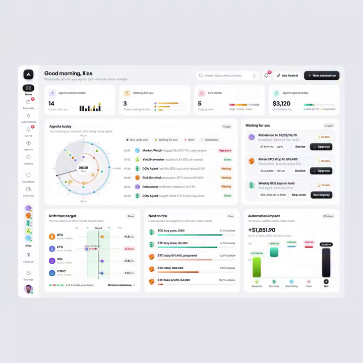
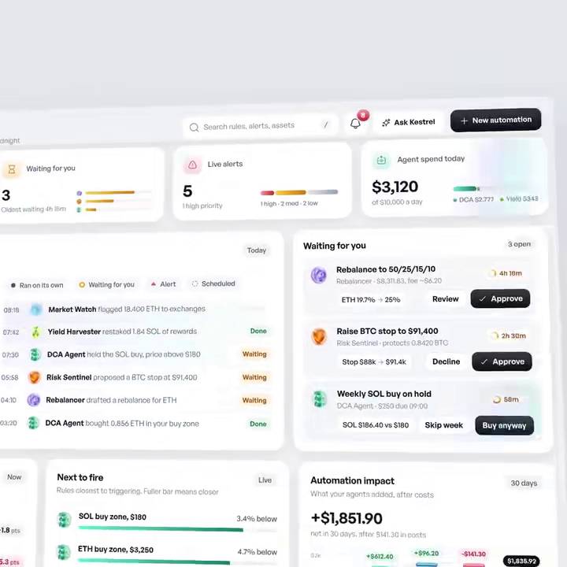
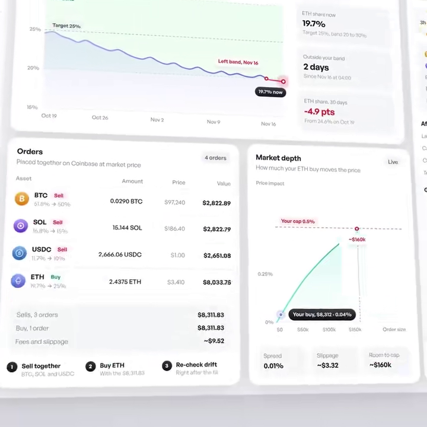
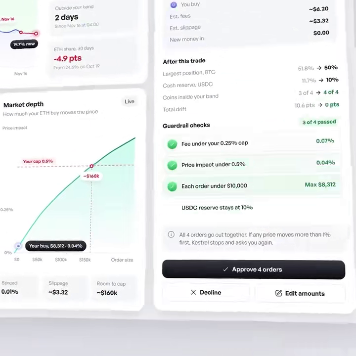
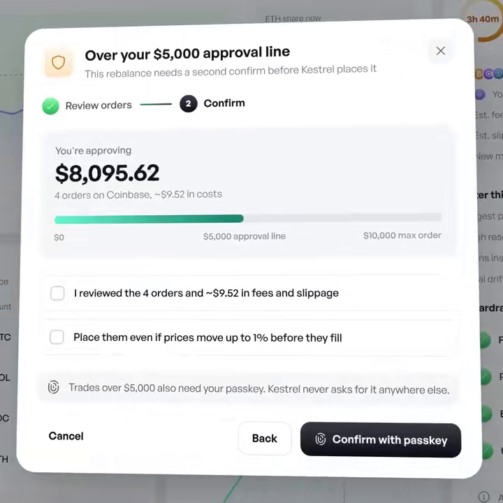
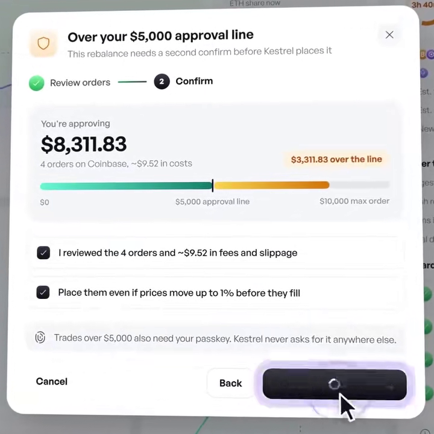
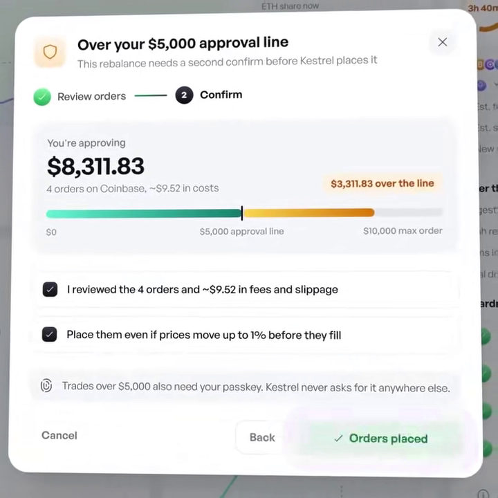
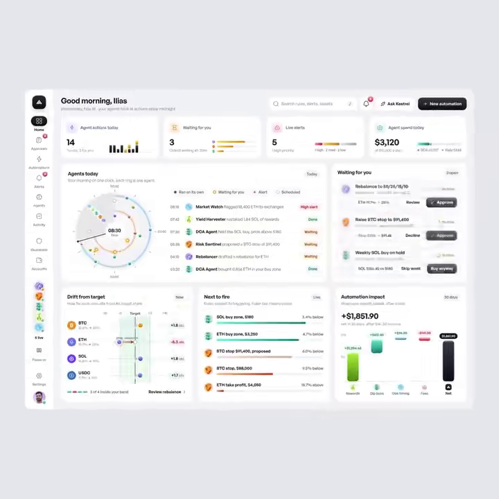

Demo «Kestrel» — 8 escenas en orden
Extraídas del video de 22 s; para cada escena se eligió el fotograma más nítido.

1Dashboard inicial — 0 acciones, 00:000.0 s

2Dashboard tras el time-lapse — 14 acciones5.9 s

3Detalle «Rebalance to 50/25/15/10» — órdenes y market depth10.5 s

4Guardrail checks + botón «Approve 4 orders»11.5 s

5Modal «Over your $5,000 approval line» — sin marcar13.8 s

6Checkboxes marcados + «Confirm with passkey»16.6 s

7Confirmación «✓ Orders placed»17.2 s

8Dashboard final — cierre de la demo21.5 s